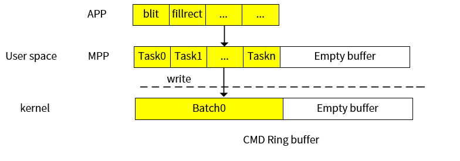

MPP 对 GE 接口的封装
15 Jan 2024
Read time: 2 minute(s)
由于驱动支持非命令队列和命令队列两种模式，在提供的用户态 MPP 接口中，对调用驱动的接口进行了封装，保持了统一的调用 API， 建议用户统一使用 MPP 中间层 API。在命令队列模式下，task 会先缓存在用户态的 cmd buffer 中，当调用 mpp_ge_emit 后， 会通过 write 接口把命令写入内核的 ring buffer。

| 接口名称 | 语法 |
|---|---|
| mpp_ge_open |
|
| mpp_ge_close |
|
| mpp_ge_get_mode |
|
| mpp_ge_add_dmabuf |
|
| mpp_ge_rm_dmabuf |
|
| mpp_ge_fillrect |
|
| mpp_ge_bitblt |
|
| mpp_ge_rotate |
|
| mpp_ge_emit |
|
| mpp_ge_sync |
|
| 接口名称 | 功能说明 | 参数定义 | 返回值 | 注意事项 |
|---|---|---|---|---|
| mpp_ge_open | 打开 ge 设备 | - |
struct mpp_ge 结构体指针 NULL：失败 |
- |
| mpp_ge_close | 关闭 ge 设备 | ge: struct mpp_ge 结构体指针 | - | - |
| mpp_ge_get_mode | 获取 GE 模式 | ge: struct mpp_ge 结构体指针 |
enum ge_mode 枚举类型 通过返回值可以获取 GE 是否工作在命令队列模式 |
- |
| mpp_ge_add_dmabuf | 添加 DMA buffer | ge：struct mpp_ge 结构体指针 dma_fd：dma buffer fd |
|
- |
| mpp_ge_rm_dmabuf | 删除 DMA buffer | ge：struct mpp_ge 结构体指针 dma_fd：dma buffer fd |
|
- |
| mpp_ge_fillrect | 矩形填充 | ge: struct mpp_ge 结构体指针 fillrect:struct ge_fillrect 结构体指针 |
|
normal（非命令队列）模式此接口是同步的。命令队列模式此接口是异步的：
|
| mpp_ge_bitblt | 位块搬移 | ge: struct mpp_ge 结构体指针 blt:struct ge_bitblt 结构体指针 |
|
normal（非命令队列）模式此接口是同步的。命令队列模式此接口是异步的：
|
| mpp_ge_rotate | 任意角度旋转 | ge: struct mpp_ge 结构体指针 rot:struct ge_rotation 结构体指针 |
|
normal（非命令队列）模式此接口是同步的。命令队列模式此接口是异步的：
|
| mpp_ge_emit | 向驱动发送命令 | ge: struct mpp_ge 结构体指针 |
|
normal（非命令队列）模式此接口为空，不产生任何作用。 命令队列模式此接口通过 write 接口，把用户态 buffer 中缓存的命令都写入驱动。 |
| mpp_ge_sync | 阻塞等待所有任务执行完成 | ge: struct mpp_ge 结构体指针 |
|
normal（非命令队列）模式此接口为空，不产生任何作用。 命令队列模式此接口通过调用 SYNC 接口，等待所有任务都完成。 |